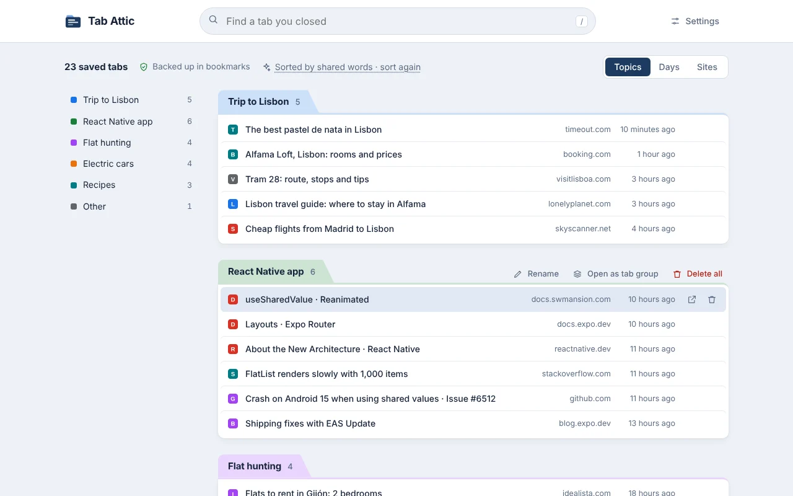
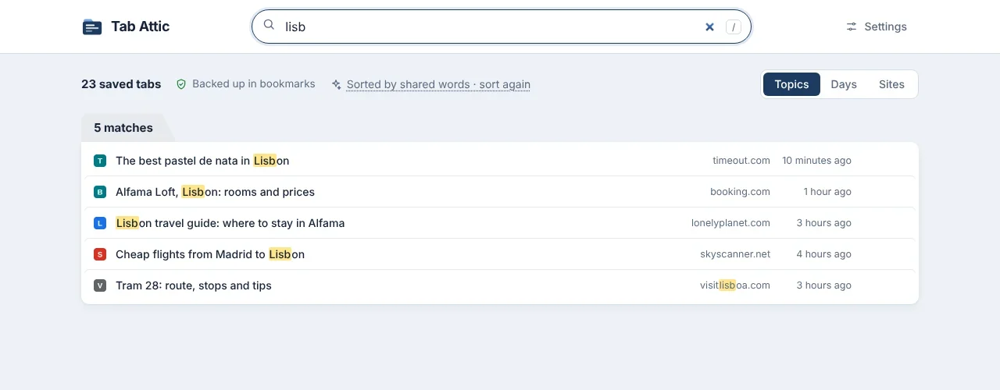
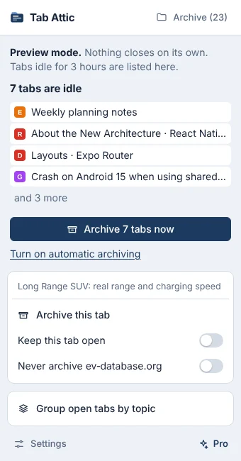

Find any tab you closed
Type a few letters of a title, site or topic, in any language. Open one tab, or a whole topic as a Chrome tab group.
Tab Attic saves the tabs you've stopped using, then closes them. Every one stays searchable, sorted by topic, and backed up in your Chrome bookmarks.

Most of us keep tabs open because closing them feels like losing something. Tab Attic takes that risk away.
If you haven't looked at a tab for 3 hours of active time, it's due. Nights, weekends and a closed browser don't count.
First into Tab Attic, then into your Chrome bookmarks. Only after that does the tab close.
Chrome's built-in model sorts saved tabs by meaning, on your computer. Without it, tabs are grouped by shared words.
Type a few letters of a title, site or topic, in any language. Open one tab, or a whole topic as a Chrome tab group.

Start in preview mode and watch what would be archived before anything closes.

The extension stores everything in your browser: its own database and your Chrome bookmarks. If you remove it and install it again, the archive comes back from the bookmarks.
No. It has no server. Tabs are stored in the extension's database in your browser and in your Chrome bookmarks. If you use Chrome Sync, Chrome syncs those bookmarks as it does all of yours.
The bookmark folder Other bookmarks › Tab Attic stays. Install Tab Attic again and it rebuilds the archive from there.
Yes. It uses the model built into Chrome (Gemini Nano), which runs on your computer. It needs a fairly recent computer; on others, tabs are grouped by shared words instead.
No. It never closes the tab you're on, pinned tabs, tabs playing sound or full-screen windows, and it starts in preview mode, where nothing closes until you switch to automatic.
Chrome 121 or newer on Windows, macOS, Linux and ChromeOS. Grouping by meaning needs Chrome 138 or newer.